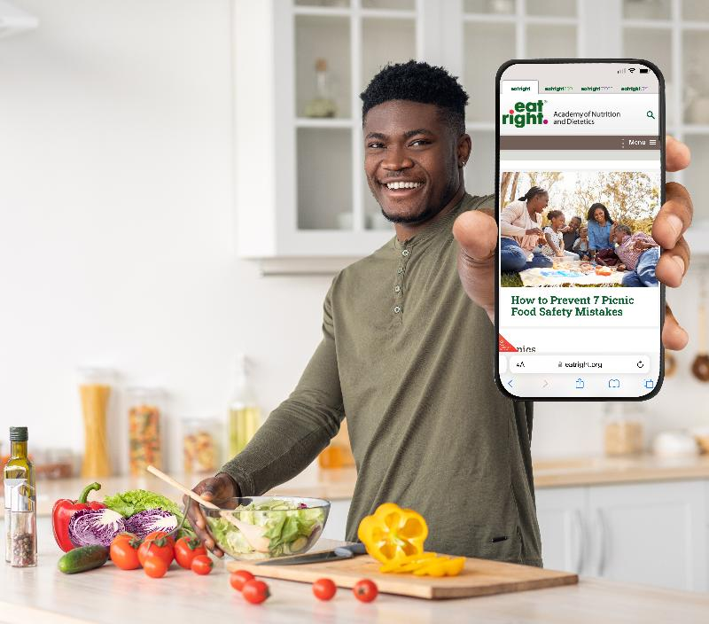

Unit Learning Objectives:
- 1.6.4 Identify valid nutrition sources.
Internet and Social Media Influences

The majority of Americans have searched the internet for health and wellness information, and more than 25% now use social media as a primary source. Platforms like TikTok, Instagram, YouTube, and Facebook are saturated with content from a wide range of users—everyone from health care professionals to business brands to everyday influencers. Topics like fitness journeys, healthy recipes, weight loss tips, supplements, and wellness trends flood users' feeds. While this access to health information can be empowering, it also presents serious challenges.One of the biggest issues is that the internet has no filter for credibility. Anyone can share health information online, regardless of their education or qualifications. A well-designed blog or confident video doesn't guarantee the information is accurate. In fact, content from non-experts who speak with bold, confident language often gains more traction than content from credentialed professionals who communicate with scientific nuance. Unfortunately, this can lead to the viral spread of myths, pseudoscience, and harmful advice.
People tend to trust messages that sound confident and certain, even if they're inaccurate. Meanwhile, trained health professionals often use careful, evidence-based language that reflects scientific complexity—phrases like "the research suggests," "this may help in certain populations," or "more studies are needed." This competence-based communication can sound less persuasive in fast-paced, soundbite-driven platforms, making it difficult for experts to compete with influencers who offer simple, one-size-fits-all advice.
Trust in government and health care professionals has declined in recent years, while trust in personal experiences shared online has increased—especially among young adults. In fact, nearly 90% of people ages 18–24 say they trust health advice found on social media. This generational shift means peer influence is often stronger than professional guidance. To address this, the Centers for Disease Control and Prevention (CDC) and other public health organizations now encourage licensed professionals to be more present and active on social media, in hopes of bridging the gap between scientific credibility and public trust.
Despite these challenges, high-quality, evidence-based nutrition content does exist online. But it's often buried beneath less credible—and more viral—information. Many popular articles lack author names, cite no peer-reviewed research, or are designed to sell a product. When people unknowingly share this content, they can unintentionally contribute to the spread of misinformation. Helping the public recognize trustworthy content and understand how science is communicated is still a work in progress—but it's essential for improving health outcomes.
|
Internet |
|
|
Books, newspapers, and magazines |
|
|
Television |
|
|
Any media sources |
|
Nutrition Experts
Many professionals work with people; not all are educated to provide evidence-based health and nutrition recommendations. Anyone can call themselves a nutritionist without any education because a nutritionist, by definition, is simply a person who follows nutrition. Consulting a "nutritionist" doesn't necessarily mean that you are getting reliable information. Most states allow anyone to use the title of a nutritionist. The person using the title may have no formal academic education in nutrition. You often have to pay a fee to get a certificate or complete an easy course online. While so-called nutrition experts may be well-intentioned when giving nutrition advice, their recommendations are often based on personal experiences. They may not know if the information is science-based or safe for a particular person. Unreliable, inaccurate information can lead to harmful practices that can negatively impact individuals' health and nutrition goals.
Consumers need to clearly understand the academic background and credentials each nutrition professional holds. Physical appearance, rankings, or titles do not qualify an individual as a nutrition expert. Many certifications are also unreliable, especially if they are based on short-term classes provided by unlicensed groups. Licensing and credentialing ensure the professional holds rigorous education and academic training to deliver safe and accurate information. Especially when working with people with health problems, additional training, advanced degrees, or qualified certifications are recommended to advance their skills and knowledge. State and national laws dictate the licensing and credentialing of each profession. Laws are in place to protect the general public from harm by ensuring ethical conduct and monitoring violations.
Trustworthy Experts are Credentialed and Educated!
There is a range in preparation for each professional based on academic background and rigorous credentials. Does the professional hold an undergraduate degree, graduate degree, or no degree? Was there supervised practice or an internship? Is there an examination, and to what extent? In other words, understanding how easy or difficult the credential was to obtain can be critical to recognizing how trustworthy the advice is. As credentials vary in requirements, so does the knowledge of the professional and the complexity of their skills.
A registered dietitian/nutritionist (RD/RDN) is considered a nutrition expert. They hold a minimum of a bachelor's degree in dietetics or nutrition, have completed a minimum of 1,200 hours of supervised practice, and have passed a national registration examination. Advanced practices in this field include master's and doctoral degrees or specialty certifications in various areas. Continuing professional education credits are required to maintain active registration by the Commission on Dietetic Registration and ensure up-to-date knowledge. This helps to avoid outdated recommendations or practices. Registered dietitians are educated to translate the science of nutrition into practical solutions for healthy living and diet therapy. They work in hospitals, schools, public health clinics, nursing homes, fitness centers, food management, food industry, colleges and universities, research, and private practice.
Licensed Dietitians/nutritionists (LD/LDN) are also nutrition experts. Most likely also an RD/RDN, these individuals are also licensed by the state they work in, especially if providing medical nutrition therapy to individuals. Many health facilities require state licensure. Each state maintains its own licensure for dietitians. The requirements for state licensure are very similar (if not the same) to national registration.
Some healthcare facilities employ other nutrition professionals without RD/RDN or LD/LDN credentials. For example, a certified nutrition specialist (CNS) can be earned by an individual with an advanced degree in nutrition and either 1,000 hours of supervised practice or 4,000 hours of unsupervised practice, plus passing a certification exam. The academic and clinical preparation requirements for this credential are not as specific or rigorous as those for a dietitian. A registered dietetic technician (DTR) works under the supervision of a dietitian in a healthcare setting and may perform nutrition screenings and interventions for patients without complex nutrition problems. The DTR credential can be earned by successful competition of either an AS degree in nutrition or a BS degree in dietetics from an accredited institution.
A certified dietary manager (CDM) is trained in a certificate program and is certified through a credentialing exam. A CDM most often works in a nursing home or long-term care facility. This professional helps direct food and nutrition services. Others have extensive knowledge in the science of food and nutrition due to their advanced degrees in the field, although they may not hold the registration or licensed credentials. These experts usually seek careers in research or education and do not practice medical nutrition therapy with individuals.
Individuals and Groups
Sometimes nutrition opinions come from groups rather than individuals. Many groups provide exceptional nutrition information, especially government organizations like the Center for Disease Control (CDC) and the National Institute of Health (NIH). Professional organizations like the American Academy of Nutrition and Dietetics (AND) also give sound advice. Universities are another excellent source as they are often at the root of the research being conducted. Many nationally recognized health organizations like the American Heart Association and American Cancer Society are also great resources. But, what about other groups?
The nutrition area is especially prone to biased opinions and misinformation. When evaluating nutrition groups, consider who is behind the group. What is their intention? Are they attempting to influence readers to believe their view or sell products/services rather than being informative? Is the information founded in science and evidence-based research? Does the group employ or maintain an advisory board with credentialed and licensed nutrition and health professionals? Ideally, groups should be composed of the same credentialed individuals discussed previously. The groups should not impose an agenda, especially if it is for the purpose of selling their products, and should only promote reliable, evidence-based information.
How do you find reliable nutrition articles from peer-reviewed science-based journals? The best place to begin your search is the online library.When you load the link into a new window, you can begin your search with the search tool on the library page. You can also use Google Scholar.